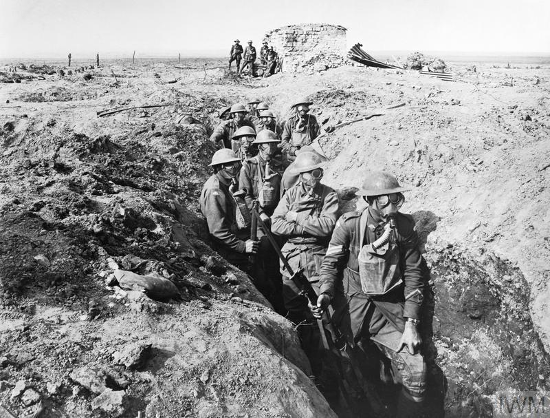

Bad weather, limited progress and mounting casualties forced the British to call off the offensive in November. The outcome of the match is still controversial. Haig's offensive cost the British Army 244,897 men and failed to eliminate the German submarine threat. British Prime Minister David Lloyd George (1863–1945) condemned the operation as a "useless campaign". [1] However, although German troops held the line, the defenders suffered at least 217,194 casualties. (S. Jones, 2015)
Armas químicas – UNODA. (s. f.). https://disarmament.unoda.org/es/adm/armas-quimicas/
Jones, S. J. (2015). Ypres, Battles of. International Encyclopedia. Recuperado 5 de marzo de 2024, de https://encyclopedia.1914-1918-online.net/article/ypres_battles_of#:~:text=Ypres%20gave%20its%20name%20to,focus%20for%20post%2Dwar%20remembrance.
Primera guerra mundial. (2024). Holocaust Encyclopedia. Recuperado 5 de marzo de 2024, de https://encyclopedia.ushmm.org/content/es/article/world-war-i#:~:text=Durante%20la%20Primera%20Guerra%20Mundial,tarde%20se%20incorporaron%20la%20Turqu%C3%ADa
 Index
Index